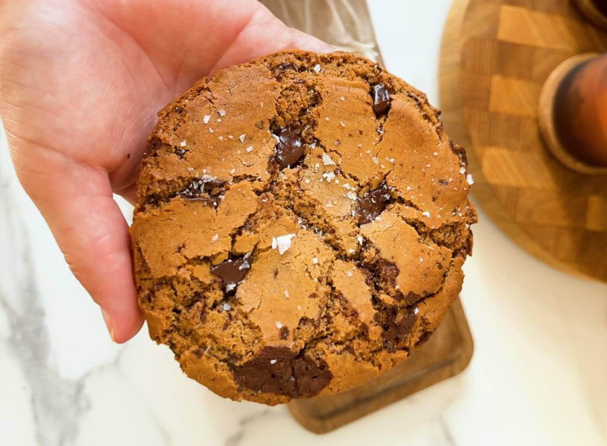
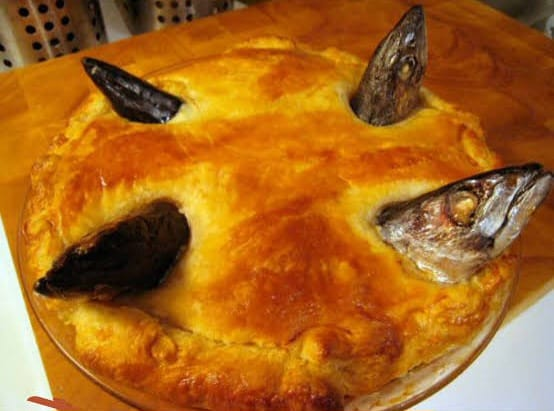
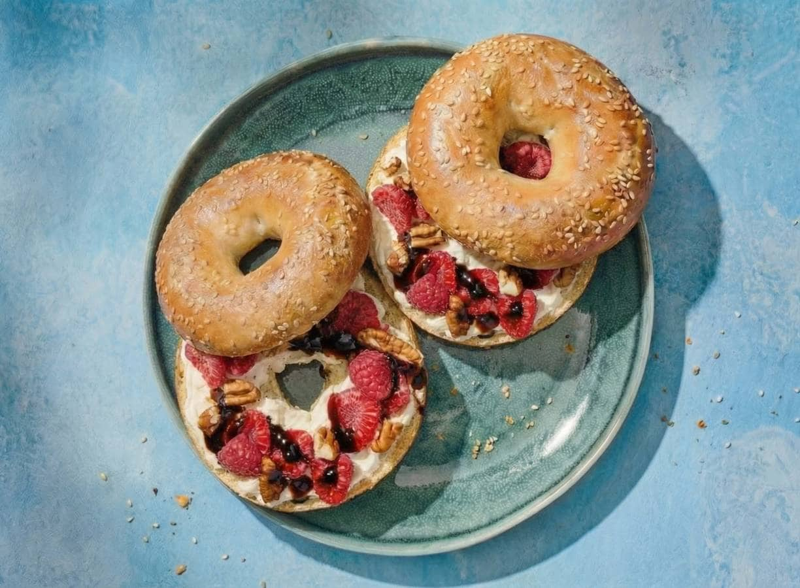
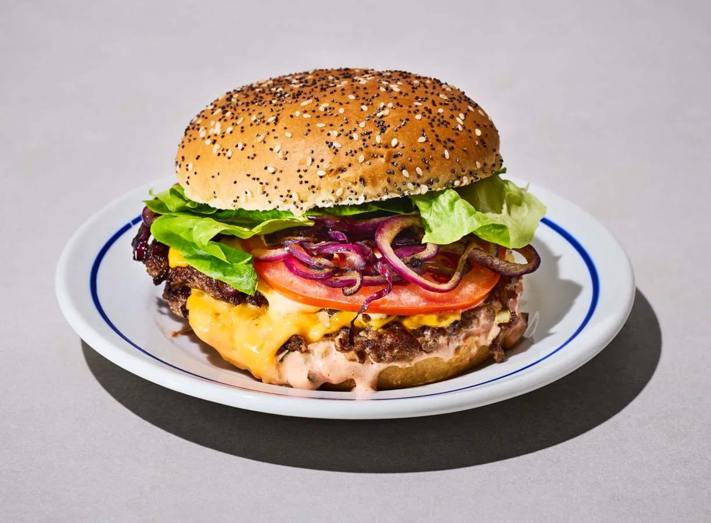
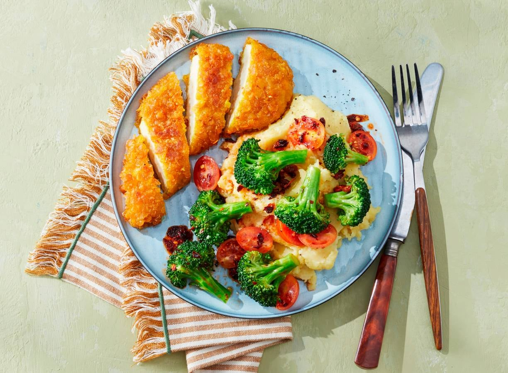
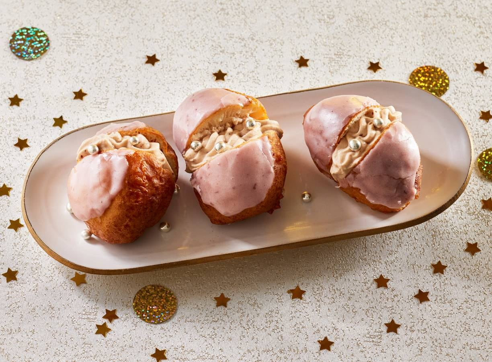

Populaire recepten

Chocoladekoekje
een koekje, een dekentje en een heleboel comfy vibes. Deze single serve chocolate chip cookie hoef je met niemand te delen.

Loaded zoete aardappel met paprika komkommersalsa
Een heerlijk gezond hapje: loaded zoete aardappel uit de airfryer. Krokant vanbuiten, zacht vanbinnen en met een frisse paprika-komkommersalsa.

Marshmallow-chocodip van de BBQ
Houd bij de BBQ vooral een plekje in je buik vrij voor deze lekkernij: een marshmallow-chocodip! Gemaakt met alle ingrediënten voor s'mores: chocolade, marshmallows en koekjes om te dippen.

recent toegevoegde recepten

Kip met krieltjes en gemengde salade
Crispy kip en goudgele krieltjes uit de airfryer. Met een frisse gemengde salade on the side. Minimale moeite, maximale smaak. En nog gezond ook

Lasagne met spinazie en ricotta
Deze romige lasagne met ricotta, spinazie en mozzarella is gezond én tover je met de airfryer met gemak op tafel. Over comfortfood gesproken!
Loaded zoete aardappel met paprika komkommersalsa
Een heerlijk gezond hapje: loaded zoete aardappel uit de airfryer. Krokant vanbuiten, zacht vanbinnen en met een frisse paprika-komkommersalsa.

Pasta met zalmen geroosterde greonten
Deze pasta met zalm en geroosterde groente uit de airfryer is de ideale gezonde maaltijd. De airfryer karamelliseert de groenten, de zalm blijft zacht en verse kruiden zorgen voor extra frisheid.

maaltijden
Kip met krieltjes en gemengde salade
Crispy kip en goudgele krieltjes uit de airfryer. Met een frisse gemengde salade on the side. Minimale moeite, maximale smaak. En nog gezond ook
Lasagne met spinazie en ricotta
Deze romige lasagne met ricotta, spinazie en mozzarella is gezond én tover je met de airfryer met gemak op tafel. Over comfortfood gesproken!
Loaded zoete aardappel met paprika komkommersalsa
Een heerlijk gezond hapje: loaded zoete aardappel uit de airfryer. Krokant vanbuiten, zacht vanbinnen en met een frisse paprika-komkommersalsa.
Pasta met zalmen geroosterde greonten
Deze pasta met zalm en geroosterde groente uit de airfryer is de ideale gezonde maaltijd. De airfryer karamelliseert de groenten, de zalm blijft zacht en verse kruiden zorgen voor extra frisheid.

Stargazy pie
Stargazy pie is een speels, 500 jaar oud traditioneel gerecht uit Cornwall. Onder een deksel van goudbruin, boterachtig deeg bevindt zich een rijke, troostende vulling van hartige spek, prei, hardgekookte eieren en mosterdcustard. Het meest opvallende kenmerk: hele sardines worden erin gebakken, met hun kopjes naar de hemel gericht, alsof ze naar de sterren kijken.

Bagels met frambozen en balsamicocrema
Fris en perfect in balans: deze sesambagels zijn besmeerd met romige zuivelspread, belegd met sappige frambozen en knapperige pecannoten en afgemaakt met een drizzle balsamicocrema. Een spannende smaakcombinatie die iedereen zal verrassen.

Dubbele smashburger van de BBQ
Maak de ultieme smashburger van de BBQ met sappig rundergehakt, gesmolten cheddar en een romige burgersaus met augurk. Door het gehakt dun te ‘smashen’ op een hete barbecueplaat krijg je die kenmerkende krokante randjes en intense grillsmaak.

Crispy chili brocolli met kippenschintzel en aardappelpuree
Smaakvol AVG’tje met een umami-twist: broccoli met crispy chili-olie geserveerd met een krokante kipschnitzel en fluweelzachte aardappelpuree. Perfect voor een smaakvol gerecht op een doordeweekse avond.
desserts

Licor 43 creme brulee
Zoet, romig, kruidig, knapperig... deze crème brûlée met Licor 43 is een lekkere twist op dit klassieke nagerecht!
Chocoladekoekje
een koekje, een dekentje en een heleboel comfy vibes. Deze single serve chocolate chip cookie hoef je met niemand te delen.
Marshmallow-chocodip van de BBQ
Houd bij de BBQ vooral een plekje in je buik vrij voor deze lekkernij: een marshmallow-chocodip! Gemaakt met alle ingrediënten voor s'mores: chocolade, marshmallows en koekjes om te dippen.

Esma-flensjesrol
Fan van espresso martini? Dan is dit jouw kerstdessert. Deze rol van flensjes ziet er fantastisch uit op tafel en is ideaal om te delen.

Kersen-oliebollen
Deze kersen-oliebollen geven een speelse knipoog naar de tompouce: zacht, zoet en gevuld met frisse kersensmaak. Een vrolijk nagerecht dat barst van kleur en precies dat extra's geeft aan je oliebollenplateau.
drankjes

Oranje spoom met mango
Mango, bubbels en sorbetijs: het komt allemaal samen in deze feestelijke, verfrissende oranjespoom met – verrassing! – een pittig tajin-randje.